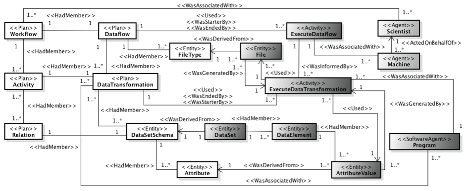

Considering the importance of provenance and raw data management in computer simulation runs to enhance traceability, reproducibility, and reliability, our research team developed a provenance data model named as PROV-Df. This data model is a specialization of the W3C PROV recommendation, to accommodate provenance and raw data in executions. We present PROV-Df in Figure 1. 
Figure 1. PROV-Df data model
PROV-Df is composed of three parts: the structure of the dataflow (white classes in the UML class diagram), execution of the dataflow (dark gray classes), and environment configuration (light gray classes). Each class in PROV-Df is extended from a PROV component. The stereotypes in the UML class diagram are used to represent PROV components. More details about PROV-Df can be found in our CCPE paper published in 2016.